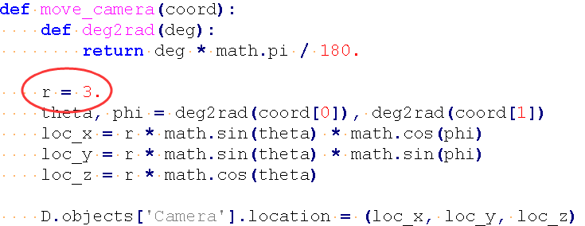
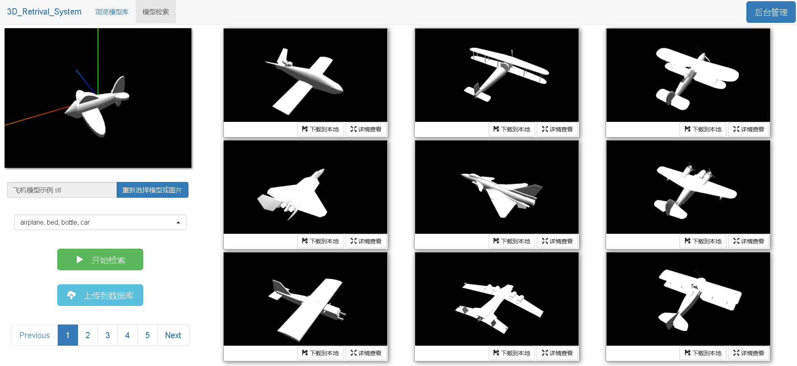

三维模型检索系统的实现细节
MVCNN实现
MVCNN实现上我用的是github上的一个Tensorflow版本的demo，不过它是Python2版本的，我给改成了Python3.6。
原论文用的是五层卷积、一层聚合、三层全连接，没有用lrn层。如下图：

这完全就是Alexnet吧，所以github上那位作者也是用Alexnet直接做了迁移学习。放在谷歌云上训练，最后用他的数据集跑到了91.86%，自己做的数据集跑到了88%左右。在不考虑召回率的情况下，mAP达到了84.59%。附mAP计算方法
数据集制作
ModelNet40数据集文件是off格式的，Python读取显示off文件基本上只能用OpenGL了，好在网上给出了另一个解决方法，用Blender软件可以使用脚本后台做off的读取拍照和转换。
解决方法只有一条这一点让我感觉非常不舒服，也非常凶险。有很多备选方案可供选择总是令人高兴的。此外数据集生成还有很多问题。
一、我用Blender制作的数据集和github上那位作者用的数据集都是黑色背景，区别在于灯光和摄像机的距离。Blender脚本生成的图像摄像机距离更远一些，正确率差这么多我也是没想到的。原论文作者好像说这个网络有光照不变性，但是我觉得还是会有影响。好的光照会带来立体感，极端一点无光照不就是空白图了。光照可供选择的调整方法太多了，不知道有没有什么标准。
二、摄像机距离可能是可以调整的，不过我也懒得再制作一遍数据集，然后再训练查看效果了。太耗时耗力。我推测要改的位置是在phong.py文件里的move_camera()函数。

把这个参数改小点应该就可以让镜头拉得更近了。
三、ModelNet40数据集本身有很多格式错误的off文件，第一行的off标志后面没有接空格，导致第二行的数据错位到第一行，这种的根本读不出来模型。具体是bathtub、bed、chair、desk、dresser、monitor、night_stand、sofa、table这九种模型。好在ModelNet10中都有完全一样的同类的模型，直接全部替换就好了。
四、数据集里有很多尺寸很小的模型，拍出来的视图会有大片的黑色背景，只有很小的缩成一点的白色模型。这方面我没想出什么好方法，可以考虑在读入模型后计算尺寸，然后根据尺寸动态调整摄像机的位置，当然这就要修改脚本了，Blender官方给出了Python版本的API手册，怎么计算尺寸和怎么摆放摄像机可以从那里面找。具体的尺寸很小的模型：
airplane_0158 airplane_0266 airplane_0299 airplane_0569 airplane_0617
bottle_0036 bottle_0064 bottle_0149
cup_0058
curtain_0071
guitar_0045 guitar_0109 guitar_0161 guitar_0191 guitar_0207
keyboard_0088
mantel_0375
piano_0114
radio_0019 radio_0041 radio_0105
tv_stand_0012 tv_stand_0055 tv_stand_0057 tv_stand_0279
vase_0354
xbox_0041 xbox_0087 xbox_0123
特征提取和保存
说是特征提取，其实特征就是网络末尾的某一层计算所得的输出的参数，这里取MVCNN的fc7的输出，每个3D模型经过网络卷积得到一个长度4096的浮点数列表，将其保存成库即可。
一开始我将特征保存到csv，但是csv文件只能存字符型数据，浮点数list只能以字符串形式存到csv里，但是在读入的时候要将str重新转化为list，这一步非常非常费时，12311条数据要28秒才能处理完，而从h5文件里读入只需要4.5秒。h5不仅读的快，而且可以直接存浮点数。唯一缺点是fix模式存完之后不可修改，要追加、删除或者改数据只能把所有数据读入内存然后操作，有点不太优雅。
存取h5文件有好几种方法，我都一一试了过去，测评如下：（这个代码段要是能折叠就好了）
# 方法一，可以用reshape无限添加法来新增数据，全部读入内存后可删除，缺点是非常麻烦。
# 无上限添加数据：https://blog.csdn.net/hero_never_give_up/article/details/96828719
with h5py.File('airplane.h5', 'w') as f:
f.create_dataset('filename', data=x) # x内所有元素必须是Unicode类型的
f.create_dataset('feature', data=y)
filenames = [] # 读取
features = []
with h5py.File('airplane.h5', 'r') as f:
filenames.extend(f['filename']) # 后续要对所有元素decode处理
features=f['feature'].value
# 方法二
# 以模型名来作为group名，优势在于方便添加和删除，缺点在于table模式写入数据超级慢，多group读取速度也慢于其他方法，而且无法写入带有中文名的key，舍弃！
for i in range(1000): # 写入
y = pd.Series(y1)
y.to_hdf('airplane.h5', key=x+str(i), append=True, mode='a', format='table')
filenames = [] # 读取
features = []
with h5py.File('airplane.h5', 'r') as f:
filenames.extend(f.keys())
store = pd.HDFStore('airplane.h5')
for key in filenames:
df1 = store[key].tolist()
features.append(df1)
print(len(features))
store.close()
# 方法三
# 很好很强大，table模式无法直接写入list，用默认fixed即可。hdf和store两种方法可以互换。
def feature_add(filename, feature, add_model_class):
filenames = []
features = []
df = pd.read_hdf('./features/' + add_model_class + '.h5', key='filename')
filenames.extend(df)
df = pd.read_hdf('./features/' + add_model_class + '.h5', key='feature')
features.extend(df)
filenames.append(filename)
features.append(feature[0])
store = pd.HDFStore(add_model_class + '.h5', 'w')
store.put('filename', pd.Series(filenames))
store.put('feature', pd.Series(features))
store.close()
GUI实现
核心代码有了之后就可以套皮封装GUI了，我写可视化界面是写算法时间的两倍多……C/S架构可以用Python里的OpenGL库，可视化界面用pyqt，但是Python版的OpenGL教程资源太少了，所以我最后用了B/S架构。
B/S架构比较美观，缺点是改前端真的很能逼疯强迫症！三维模型的显示用的是Three.js，与后端交互用了Flask框架。为了显得高大上，我在一个页面里放了九到十个模型显示窗口，如图：

没什么好说的，前端就是不断思考用户交互逻辑->码代码->自己做测试，循环往复。几个遇到的难点：
一、像这样的多个模型显示窗口需要九套renderer、scene、light、camera和controls。用数组定义循环初始化然后渲染到指定div里就可以了，值得注意的是模型的加载不能循环赋值，只能把循环展开一个个添加，当初摸索出这个特性花了大量的精力，推测可能是异步加载的原因。
二、单纯的加载模型可能会导致错位，需要重新设置模型的中心，具体是两行代码：
//加载第4个模型
objLoader.load(path[3], function(object) {
object.children[0].geometry.computeBoundingBox();//计算包围盒
object.children[0].geometry.center(); //设置中心点
object.scale.set(40, 40, 40);
scene[3].add(object);
})//这种代码可能只支持单个模型的加载，如果有多个object.children就要改代码了。
三、我把一些功能分开普通用户和管理员权限，跳转后台用到了session，设置了会话保留时间是直到本次浏览器关闭。这个功能真的很好用，用的是MySQL数据库，还加了防止SQL注入和密码bcrypt加密功能。
@app.route('/admin', methods=['GET', 'POST', 'PUT'])
def admin():
if session.get('username'):
return render_template('admin.html')
else:
return '未登录'
@app.route('/login/<username>/<password>', methods=['GET', 'POST'])
def login(username, password):
user = username.strip()
pwd = password.strip()
# 链接，指定ip地址和端口，本机上测试时ip地址可以写localhost或者自己的ip地址或者127.0.0.1，然后你操作数据库的时候的用户名，密码，要指定你操作的是哪个数据库，指定库名，还要指定字符集。不然会出现乱码
conn = pymysql.connect(host='localhost', port=3306, user='root', password='', database='flask_login',
charset='utf8')
cursor = conn.cursor(cursor=pymysql.cursors.DictCursor) # 返回字典数据类型
sql = "select * from user where username=%s;"
res = cursor.execute(sql, [user]) # 防sql注入
# 取到查询结果
if res:
print('用户存在')
ret1 = cursor.fetchone() # 取一条
if bcrypt.checkpw(pwd.encode(), ret1['password'].encode()):
print('登录成功')
session['username'] = 'admin123'
cursor.close() # 关闭游标
conn.close() # 关闭连接
return "success"
else:
cursor.close() # 关闭游标
conn.close() # 关闭连接
print('密码错误')
return '密码错误'
else:
cursor.close() # 关闭游标
conn.close() # 关闭连接
print('用户不存在')
return '用户不存在'
四、毕设要求里有个用户上传数据集并训练的条目，如果我没理解错，应该是一键训练那种需求，我觉得这个要求实在是太蠢了，就没好好做，当然那个页面做的还是比较美观的。单纯写了个网页限定了一下数据集的格式，在线训练的代码是能跑通的，正确率到90%以上就会自动停止训练，不支持断点续训。不过还是推荐后台训练，毕竟能看到训练是否收敛，也方便微调。
总结尚未解决的一些小小瑕疵
- 单张图片的检索效果非常差！虽然单视图的分类效果很好，但是检索很差，可能是特征库差的太多了。
- 图片光照和摄像机远近可能会对分类精度造成影响；
- 目前只支持windows10系统，因为拍照和转换格式使用了windows版的Blender软件，一些代码也不具有通用性。要迁移到其他服务器还需要调试，Blender软件亲测在Win7用不了！！！
- 用户要检索的文件名有空格时做了去空格处理，因为Blender是脚本执行的，指令中空格会导致系统认为是一段指令的结束；
- 没有加载纹理，只有形状上的检索。这个我觉得无所谓，本来就是基于形状检索，颜色反而会带来干扰。而且不同模型上色风格不同，统一成白色比较好；
- 太小的模型无法预处理，这一点还是蛮伤的，不同尺寸的模型需要初始化来缩放到同一大小。在实际开发的时候我是暂时把很小的模型剔出来没有训练的，找到放缩方法后会再加进库里；
- 自然图片处理不足，识别效果差，训练时没有加入自然场景下的三维模型数据集，建议不要用图片搜索，图片搜索也要用纯模型的比较好；
- 我用的是
Anaconda下的pytables包做的h5文件操作，在pip环境下可以用tables代替，我在tables 3.6.1版本下亲测无问题，但是在别人的电脑上报了错，说找不到dll文件，可能是因为他的电脑是win7系统，这里还是推荐Anaconda环境； - 网页里的css布局我几乎都是用的绝对位置，不同分辨率可能会布局混乱，不过我实在懒得改了……1920*1080布局建议缩放到90%或100%使用；
- three.js加载obj有面片损失，有部分模型会出现镂空的情况，可能把模型改成其他格式加载或者把Three.js换成别的显示框架能解决；
- 为了显示方便，库里存的都是obj模型，上传和下载都会转换成obj格式，想要用别的格式可以用Blender转成别的；
- 加载时要从服务器下载9个模型，传输的模型太大的时候比如二十多M就会感觉到卡顿，无法忍受的话可以考虑用缩略图代替模型，或者换成其他格式的模型，比如js格式；
- 还是模型太大的问题，浏览换页太快的时候会来不及加载，导致场景里没有模型，相应代码里移除的object就变成了灯光，模型就会没有灯光渲染。解决方法同上条，也可以考虑加蒙层换页，防止用户点击过快；
- 最后带/的url访问不到网页，因为做了Flask的url的唯一性处理，不做会出一些问题。